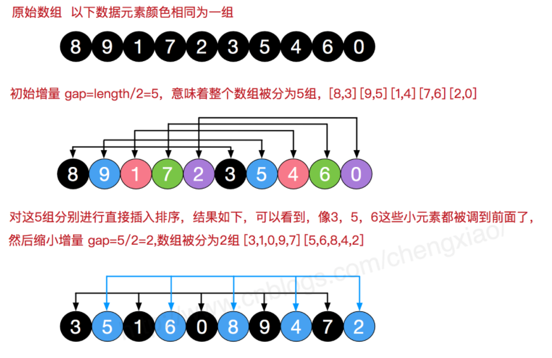

原文连接:https://www.cnblogs.com/carpeak/p/11615581.html
插入排序的基本思想：每次将一个待排序的元素按其关键字大小插入到前面已经排好的子序表中的适当位置，直到全部元素插入完成为止。本次介绍直接插入排序，折半插入排序和希尔排序。
1 直接插入排序
直接插入排序(Straight Insertion Sort)的基本思想是：把n个待排序的元素看成为一个有序表和一个无序表。开始时有序表中只包含1个元素，无序表中包含有n-1个元素，排序过程中每次从无序表中取出第一个元素，将它插入到有序表中的适当位置，使之成为新的有序表，重复n-1次可完成排序过程。

void InerSort(RecType arr[],int n) //arr[0..n-1]递增排序
{
int i,j;Rectype tmp;
for(i=1;i<n;i++)
{
tmp=arr[i];
j=i-1;
while((j>=0) && (tmp<arr[j]))
{
arr[j+1]=arr[j]; //将关键字大于arr[i]的后移
j--;
}
a[j+1]=tmp;
}
}算法平均时间复杂度为O(n2),直接插入排序是一种稳定的排序方法。
2 折半插入排序（二分）
算法的基本过程：
1）计算 0 ~ i-1 的中间点，用 i 索引处的元素与中间值进行比较，如果 i 索引处的元素大，说明要插入的这个元素应该在中间值和刚加入i索引之间，反之，就是在刚开始的位置 到中间值的位置，这样很简单的完成了折半；
2）在相应的半个范围里面找插入的位置时，不断的用（1）步骤缩小范围，不停的折半，范围依次缩小为 1/2 1/4 1/8 .......快速的确定出第 i 个元素要插在什么地方；
3）确定位置之后，将整个序列后移，并将元素插入到相应位置。
1 void BinInerSort(RecType arr[],int n)
2 {
3 int i,j,low,high,mid;
4 Rectype tmp;
5 for(i=1;i<n;i++)
6 {
7 if(arr[i]<arr[i-1]) //反序时
8 {
9 tmp=arr[i];
10 low=0; high=i-1;
11 while(low<=high)
12 { mid=(low+high)/2; //取中间位置
13 if(tmp<arr[mid])
14 high=mid-1;
15 else
16 low=mid+1;
17 }
18
19 for(j=i-1;j>=high+1)
20 arr[j+1]=arr[j];
21
22 arr[high+1]=tmp;
23 }
24 }
25 }算法平均时间复杂度为O(n2),折半插入排序是一种稳定的排序方法。
3 希尔排序
希尔排序是希尔（Donald Shell）于1959年提出的一种排序算法。希尔排序也是一种插入排序，它是简单插入排序经过改进之后的一个更高效的版本，也称为缩小增量排序，同时该算法是冲破O(n2）的第一批算法之一。它与插入排序的不同之处在于，它会优先比较距离较远的元素。希尔排序又叫缩小增量排序。
希尔排序是把记录按下表的一定增量分组，对每组使用直接插入排序算法排序；随着增量逐渐减少，每组包含的关键词越来越多，当增量减至1时，整个文件恰被分成一组，算法便终止。
过程演示


1 void ShelSort(RecType arr[],int n) //希尔排序
2 {
3 int i,j,d;
4 RecType tmp;
5 d=n/2; //增量初始值
6 while(d>0)
7 {
8 for(i=d;i<n;i++)
9 {
10 tmp=arr[i]; //对所有组采用直接插入排序
11 j=i-d;
12 while(j>=0 && tmp<arr[j]) //对相隔d个位置一组采用直接插入排序的方法
13 {
14 arr[j+d]=arr[j];
15 j=j-d;
16 }
17 arr[j+d]=tmp;
18 }
19
20 d=d/2; //减小增量
21 }
22
23 }
希尔排序平均时间复杂度为O(n1.3),速度通常比直接插入排序快。不过是不稳定的排序方法。